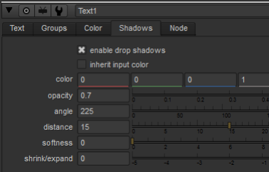

可以使用文本节点属性中的 “阴影” 选项卡将阴影添加到文本中。
要向文本添加阴影，只需选择 阴影 标签和检查 启用投影阴影 .

如果希望阴影与输入图像的颜色相同，请启用 继承输入颜色 。否则，使用 颜色 控件来选择阴影的颜色。
使用 不透明 相对于输入的 alpha 通道调整阴影的不透明度。
| 不透明 设置为 0.4。 | 不透明 设置为 0.8。 |
要调整阴影的方向，请使用 角度 滑块。0 或 360 等于左方向。
| 角度 设置为 0 (或 360)。 | 角度 设置为 225。 |
使用 距离 设置阴影与输入内容的距离。
|
|
|
| 距离 设置为 15。 | 距离 设置为 45。 |
如果你想模糊阴影，增加 柔软 价值。
| 柔软 设置为 0。 | 柔软 设置为 20。 |
如果需要，设置 收缩/扩展 滑块设置为负值以侵蚀阴影，或设置为正值以扩大阴影。
| 收缩/扩展 设置为-5。 | 收缩/扩展 设置为 5。 |
|
|